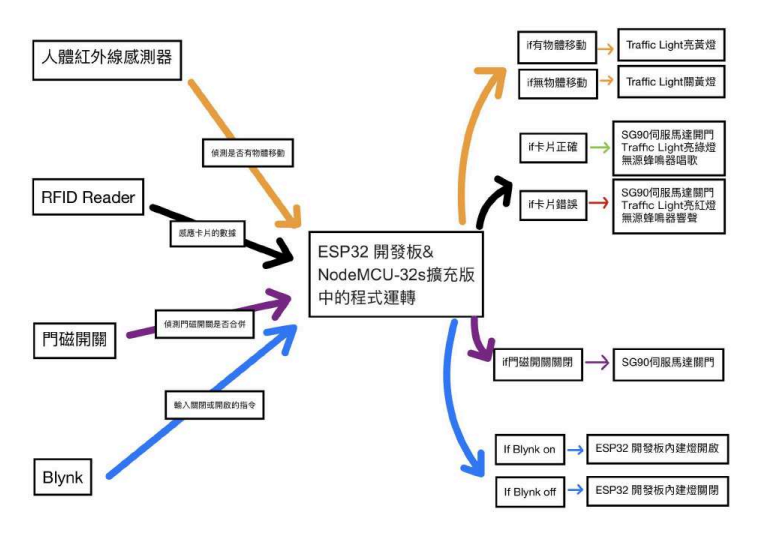
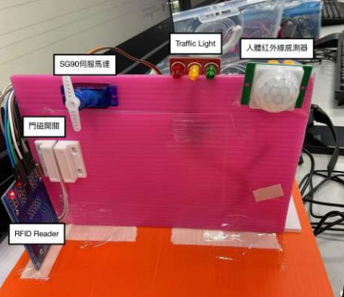
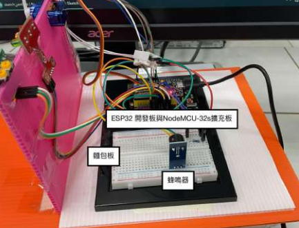
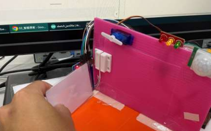

研究動機與摘要
觀察到現代家居對於安全性與便利性的需求日益增長，電子鎖已成為主流。本專題旨在開發一套整合人體紅外線偵測、門磁開關與 RFID 驗證的系統，並透過物聯網技術實現遠端監控。傳統鎖具容易遺失鑰匙且缺乏紀錄，而市售智慧鎖往往價格高昂且缺乏客製化彈性。
本研究旨在透過低成本、高效能的 ESP32 晶片，實作一套整合環境感測與身份驗證的物聯網終端，達成「主動偵測、多重驗證、雲端管理」三大核心目標。透過感測器與雲端平台的整合，不僅能提供即時的狀態回饋，更能在發生異常狀況時第一時間發送通知至使用者的行動裝置。
系統架構與設計流程
透過模組化設計，確保每個傳感器與控制器都能精準協作。

核心硬體清單
系統利用 ESP32 作為運算核心，整合多種傳感器。當 PIR 偵測到人體移動時啟動系統，並透過 RFID 讀取卡片 UID，若驗證正確則由伺服馬達開啟大門。
// RFID 驗證核心邏輯實踐
if (mfrc522.PICC_IsNewCardPresent() &&
mfrc522.PICC_ReadCardSerial()) {
String content = "";
for (byte i = 0; i < mfrc522.uid.size; i++) {
content.concat(String(mfrc522.uid.uidByte[i]));
}
if (content == AUTHORIZED_UID) {
unlockDoor(); // 驗證通過
Blynk.logEvent("door_opened");
} else {
triggerAlarm(); // 驗證失敗
}
}
程式邏輯與開發實踐
在程式開發中，我實作了 RFID 的卡片比對邏輯，並結合 Blynk 函式庫進行 Wi-Fi 連線與手機端通知。
演算法控制：
透過門磁開關的狀態判斷，確保大門關閉後自動執行鎖定指令，並在 Arduino IDE / C++ 環境下完成所有偵錯與效能優化。
研究結果與功能驗證
裝置全景與結構


研究裝置的正視圖與側視圖，展現硬體組裝的完整度。
功能運作情境

連線成功:開啟燈光
當Blynk系統開關開啟，ESP32開發板內建 LED開啟。

驗證通過：開啟大門
正確卡片感應後，綠燈亮起且馬達轉動。
研究總結與反思
從實踐中學習，將理論轉化為具備解決問題能力的實體成品。
在此次研究中，我不僅成功模擬了智慧居家系統的實用性，也展示了在技術整合與問題解決方面的能力。特別是在排除 I2C 通訊衝突與優化門磁靈敏度的過程中，獲得了寶貴的實務經驗。
Future Roadmap / 未來改進：
- 整合更完善的遠端警報通知系統
- 加入人臉辨識模組進行三重驗證
- 優化門磁連動機制以提高上鎖精準度